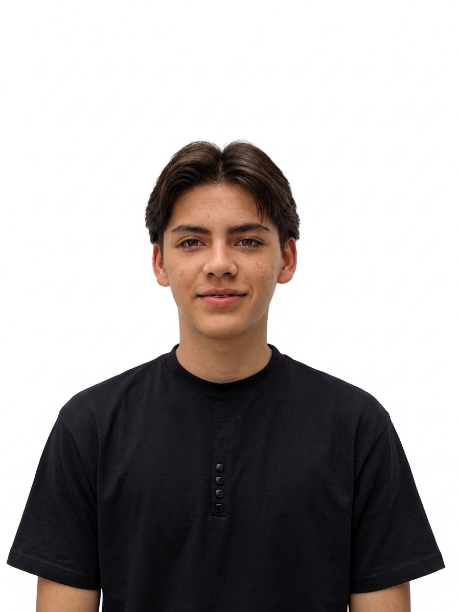

Comercio
Exterior.
Me gustaría estudiar Comercio Exterior en la Universidad del Valle. Es la carrera que quiero seguir para prepararme y ampliar mis oportunidades profesionales.
MI PROYECTO EDUCATIVO
EN CONSTANTE
01 👤 NOMBRE DEL ESTUDIANTE
Hola, soy
ESTUDIANTE · CURIOSO · CREATIVO
DESLIZA PARA EXPLORAR02 RETRATO PERSONAL
Una imagen para ponerle rostro a este espacio y a las ideas que quiero compartir.
SAMUEL TREJOS · ESTUDIANTE
03 MI FUTURO
Tengo claro el camino que quiero explorar y las herramientas que quiero sumar a mi formación.
Me gustaría estudiar Comercio Exterior en la Universidad del Valle. Es la carrera que quiero seguir para prepararme y ampliar mis oportunidades profesionales.
Quiero aprender más sobre marketing digital porque complementa mi carrera y puede ayudarme a descubrir nuevos enfoques para el Comercio Exterior.
No necesito tener todas las respuestas.
Solo las ganas de seguir buscando.
04 CURIOSIDAD DIGITAL
Me interesan la programación, el diseño web y los videojuegos: distintas formas de crear y explorar mundos digitales.
Me interesa aprender cómo se construyen programas y cómo el código puede transformar ideas en proyectos.
Me atrae combinar creatividad y tecnología para diseñar páginas y experiencias que las personas puedan usar.
Me interesan los videojuegos por sus mundos, sus desafíos y la creatividad que hay detrás de cada experiencia.
05 MÁS ALLÁ DE LA TECNOLOGÍA
Fuera de la tecnología, el baloncesto ocupa un lugar importante en mi vida y me acompaña desde hace mucho tiempo.
Juego baloncesto desde hace mucho tiempo. Es un deporte que disfruto y una parte importante de mis intereses personales.
Procuro relacionarme con respeto y tener disposición para ayudar a los demás.
Me esfuerzo por ser aplicado y responsable con mis estudios y con las metas que me propongo.
06 TEMAS PARA PROFUNDIZAR
Quiero profundizar en matemáticas y fortalecer mis conocimientos, porque considero que serán importantes para mi formación en Comercio Exterior.
Quiero profundizar en esta área y alcanzar un buen nivel de conocimiento para mi futura carrera en Comercio Exterior.
UNA PERSONA
EN CONSTANTE
EVOLUCIÓN
07 QUIÉN SOY
Soy un estudiante respetuoso, responsable, caritativo y aplicado en mis estudios.
Me esfuerzo por cumplir con mis responsabilidades y dar lo mejor de mí en el estudio. También valoro tratar bien a las personas y ayudar cuando está a mi alcance.
Me interesan la programación, el diseño web y los videojuegos. Fuera de la tecnología, disfruto el baloncesto, un deporte que juego desde hace mucho tiempo. En el futuro, me gustaría estudiar Comercio Exterior en la Universidad del Valle y aprender marketing digital para complementar mi formación.
08 HABLEMOS
Puedes escribirme por correo electrónico para conversar sobre mis intereses y mi proceso de aprendizaje.
Escríbeme samueltrejossaavedra@gmail.com